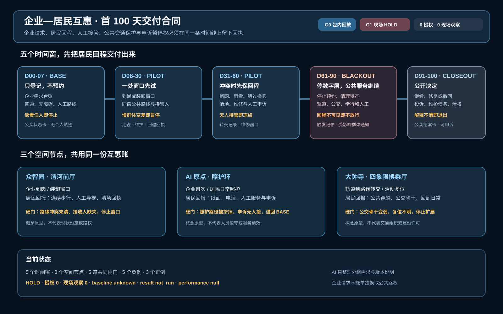
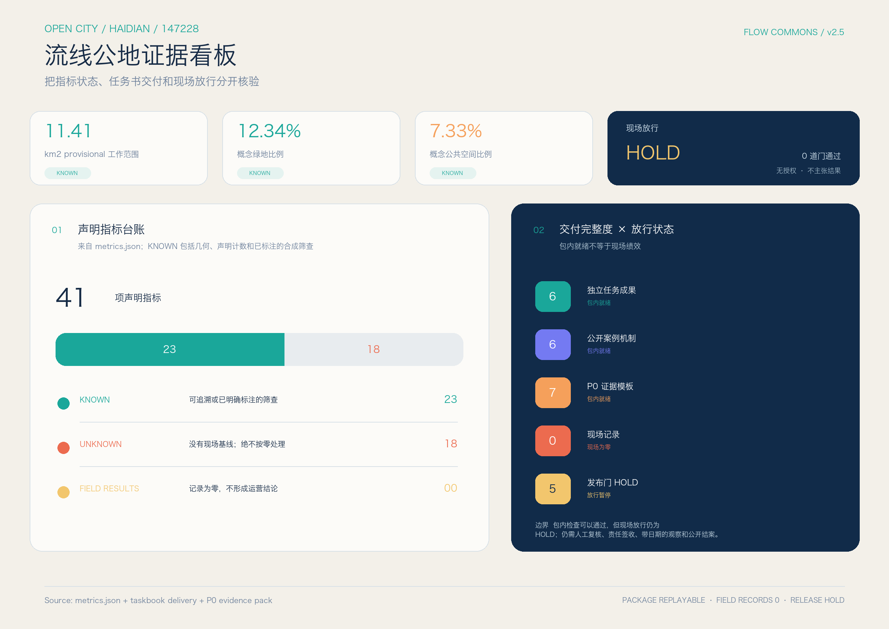

京张流线公地：企业—居民互惠通勤操作系统
用众智园清河前厅、AI 原点照护环和大钟寺四象限换乘厅三种空间原型，把企业的到岗与路缘请求，同居民的连续通行、人工入口和申诉暂停权成对交付；缺少现场证据时只登记、不预约、不扩容。
京张流线公地：企业—居民互惠通勤操作系统
一句话判断：京张带下一步要把企业到岗与装卸、居民上学就医与回家、轨道换乘、路缘停车和维护投诉放进同一个可复算的交通操作系统，让每一项 AI 优化先证明没有挤掉最慢的人。
本方案是一份独立的新投稿包，第一名项目 zhongzhiyuan-autonomy-commons 不在本目录中修改。方案提出“一张时段路缘账本、两侧需求台账、三类接驳、四项服务水平、五道验证门”：企业侧登记到岗、班车、货运和充电需求；居民侧登记不含个人轨迹的日常服务需求；空间侧用地铁—公交—自行车—步行/无障碍—汽车的多方式接驳链和可逆路缘窗口消化峰值，同时把跨边界对外通勤纳入 OD；未来空中出行仅保留一个有审批前置条件的实验接口。全部空间仍属于概念设计，官方边界、路权、交通量、权属和现场体验到位后才能复算，不把开放数据筛查写成现状容量。
首屏评审入口：先看两边是不是同时兑现
本包把问题收窄到一件事：企业得到一个到岗、接驳或路缘窗口时，居民具体得到什么，谁负责兑现，哪一种失败可以当场叫停。 mobility-commons-jingzhang 侧重方式与网络运营，commute-co-benefit-jingzhang 侧重需求、容量和失败政策；这里专门把互惠关系落到三处空间原型。企业侧节省不能单独发布，必须和居民日常到达、无障碍路线、人工等价入口、失败与撤回分母、最慢群体不变差以及申诉暂停权一起验收。

首屏把早高峰、午间路缘、雨雪与夜间返程、故障维护与退出四个冲突窗口接到同一套六项发布条件。当前只能报告 G0 包内回放 PASS：4/4 合成请求保留回退、6/6 检查和 5/5 回滚动作可重放；G1 现场发布 仍为 HOLD，因为现场路线审计、责任接受、锁定分母和运行授权都是 0。四个负例会在缺少居民回报、人工/公共交通等价路径、最慢群体保护或申诉暂停权时阻断发布 空间数据 空间数据 空间数据。
一页执行摘要：先验收一条到站—到家链，再谈共享接驳扩展
普通人要在出门、换乘、受阻、求助和回家每一步都保有可理解的选择。第一个可逆试点只验收一条最小链：选择公共/无障碍或人工路径 → 请求一项交通服务 → 在断网、雨雪、路缘冲突或错过衔接时触发人工/轨道公交接管 → 对不安全或不可达状态冻结预约并退出 → 由独立复核者回放证据后决定修复、扩展或撤回。当前 M-09 只在本地、无网络、无个人数据的合成桌面演练中复演 4 条请求，performance_results=null、operational_status=not_authorized_not_run，不承担现实运营承诺。
| 步骤 | 普通人看到的空间/服务 | 必须留存的证据 | 失效即闭环的动作 |
|---|---|---|---|
| 1. 选择 | 站口导向、连续步行/轮椅路线、人工/电话/纸面入口与共享接驳候选并列展示 | 选择方式、服务窗口、无障碍需求类别和版本号；不留连续个人轨迹 | 数字入口不可用时保留人工等价路径；没有等价路径就不开放 |
| 2. 请求 | 公共交通换乘、班车/小巴候选、路缘装卸或社区日常服务台 | 请求 ID、服务对象分组、起止时间窗、责任人和替代路线 | 权属、责任人、容量或同意边界未知时只登记、不预约 |
| 3. 接管 | 错过衔接、断网、雨雪、无障碍受阻或路缘冲突后，现场人员指向轨道/公交或人工路线 | 触发事件、接管人、到达/转交时间、清场动作和投诉入口 | 冻结自动预约，优先人工/公共交通；无人可接管时停止服务 |
| 4. 退出 | 消息牌、人工窗口和纸面/电话申诉让人能改道、回家或取消 | 取消原因、替代路线、未解决项和 not_authorized_not_run 状态 | 消防、无障碍、隐私或安全硬门失败时不扩容、不写成达标 |
| 5. 复核 | 独立复核者回放一条到站—到家链，比较是否继续、修复或撤回 | 原始最小日志、分组结果、投诉关闭证据、版本和复核意见 | 证据缺失或最慢群体变差时回到 P0 调查与人工服务 |
这张表把设计图、路缘账本、M-09 回退桌演和 P0/P1/P2 分期接成同一个验收入口；4 条合成请求的 PASS 只证明状态机和回滚逻辑可重放，不证明真实客流、无障碍绩效、人员值守、公众接受或安全结果。
互惠交付证据：四项硬门
四套离线屏仍保留在 visual/assets，正文只留下会阻断空间发布的条件。评审先看能否交付，再看模型分数。
| 硬门 | 放行前必须看到 | 缺证据时的动作 |
|---|---|---|
| 无障碍可用 | 有日期的逐段走查、可用替代路线、人工交接与责任确认 | 状态回到 UNKNOWN；不发布 READY，不扩展预约 空间数据 |
| 责任移交 | 发起方、接收方、服务窗口、非 AI 等价服务、停止与恢复证据 | 接收方未确认，责任留在发起方，公共路线保持开放 空间数据 |
| 失败与申诉 | 受影响群体、原始记录、人工决定、替代服务、追加式纠错和申诉暂停权 | 先暂停发布；不能删除失败、撤回或未完成请求 空间数据 |
| 公交骨干保护 | 公共交通客流指数、接驳份额、车公里比和最差群体可达性同时过门 | 任一项失败就封顶接驳，退回轨道、公交和人工服务 空间数据 |
当前四项都只通过包内结构回放，没有现场回执、运行授权或真实绩效。空中候选保持 0 个代理并排除在运营分母之外；论文只帮助定义问题，不提供海淀参数或许可 来源。
首 100 天交付合同，先把回程交付给居民
三处空间原型已经回答服务落在哪里，首 100 天合同继续回答谁先做什么、公众看到什么、哪一步必须停。visual/assets/enterprise-resident-100day-contract.json 将企业请求和居民回程放进 BASE → PILOT → BLACKOUT → CLOSEOUT 四个状态，并拆成五个时间窗。企业只能提交分组需求，不能凭一项需求换取公共路权；居民的普通、无障碍、轨道公交和人工路径必须先可见。
| 时间窗 | 企业交付 | 居民回程 | 放行证据 | 失效动作 |
|---|---|---|---|---|
| D00-07 | 分组需求登记，不预约 | 普通、无障碍、人工路线卡 | 走查范围、接收人、申诉入口、公开状态卡 | 缺责任人或路线未知，停在 BASE |
| D08-30 | 一处到岗或装卸窗口 | 同窗公共路线和人工接管 | 有日期走查、维护人、回退回执、分组请求记录 | 最慢群体变差或容量分母未锁定，暂停 |
| D31-60 | 冲突时清场、维修并回读 | 纸面、电话、人工替代和申诉暂停 | 断网/雨雪回放、维修窗口、申诉回读 | 无人接管或路缘未清，冻结窗口 |
| D61-90 | 停预约、清资产、公开原因 | 轨道、公交、步行和人工回程 | 触发记录、人工路线回读、受影响群体通知 | 回程不可见，保持 BLACKOUT |
| D91-100 | 发布继续、修复或撤回决定 | 普通公共资产和可申诉结案 | 投诉处置、维护债务、清权记录、公众结案卡 | 理由不可解释或仍有未清权痕迹，退出 |

五道共同闸门贯穿三处节点。第一道要求普通服务先可用，第二道要求每项企业请求都有居民回程和维护责任人，第三道把轨道、公交、步行和无障碍路线留在验收分母，第四道要求数字层或接驳层可以停而公共服务继续，第五道要求投诉、维修债务、撤回和清权结果对公众可读。当前合同只完成包内合成回放，授权、现场观察、本地基线和绩效结果仍为 0、0、unknown 和空值；run-enterprise-resident-100day-contract.js 与正负例测试是离线边界检查，不是现场验收。
设计依据与资料清单
征集任务要求覆盖三层空间研究、三处重点区、AI+交通与产业生态，并交付可检查的图层、指标、图纸和视觉页 来源 来源。
本包沿用公开任务书的 provisional 工作底盘，但以交通运营为主题重做路网属性、指标、来源、图件和实施门槛；geometry/site_boundary.geojson、geometry/key_areas.geojson 都明确 official_boundary=false、geometry_role=provisional_constraint，不得解释为法定红线 空间数据 空间数据。
边界与包内证据的使用边界见 来源 来源 来源。
北京“十四五”交通规划将一小时门到门、轨道/公交/步行/自行车一体化、公交优先和智慧交通列为方向 来源。海淀区 2026—2027 年道路停车管理服务招标则把停车秩序、引导巡查、设备检查、异常处置、后台和“接诉即办”放进同一项服务，路缘因此需要责任主体和服务水平来管理 来源。
海淀西北旺规划交通材料还要求轨道站点/交通枢纽、首层公共界面、换乘自行车停放、应急疏散和交通影响评价共同校核 来源。这些材料是政策和招标证据，不是本 provisional 范围的现状数据。
资料等级分为四类：known 是文件可回读的几何数值；unknown 是必须调查而不能猜的企业、居民、停车、换乘和投诉基线；design_target 是可逆试点的验收门槛；blocked 是没有权属、路权、责任人、无障碍等价服务或安全回退时不得扩容的状态。企业通勤研究支持班车、公共交通补贴、弹性工时和保证回家等需求管理工具，但也提醒 rideshare 和补贴的效果取决于工作密度、制度和分组行为 来源 来源 来源；不把论文中的效果百分比迁移成海淀结果。
三层范围工作框架
三层结构把“企业为什么要改”和“居民如何真正受益”接到同一条证据链上 深度 标准。
1. 统筹层：研究京张—海淀的轨道、公交、校园、园区、社区和生活服务如何形成多方式接驳；识别企业时间窗、居民时间窗和公共空间之间的冲突，不新增一条未经交通论证的道路。 2. 总体层：用 land_use、buildings、roads、green_space、public_space、constraints 和 phasing 共同定义到站、到岗、到家和服务维护的空间关系；用时段状态而不是永久占用表达路缘。 3. 重点区层：在众智园、AI 原点社区、大钟寺 AI 产业聚集区各做一组可逆试点，分别验证企业到岗、居民日常和轨道/路缘换乘。
三层共享同一 provisional 约 11.41 km² 工作范围，面积只作为设计比较值 指标。正式边界发布后，应锁定 revision，重算所有图层、路线、分区、图纸和指标；不得只替换一张效果图。
统筹研究范围产业与未来城市研究
企业侧：把“通勤”从人力成本变成可治理的服务
企业不再各自发班车、各自占用路缘，而是在不上传个人轨迹的前提下，按日/周提交聚合需求台账：班次窗口、员工总量区间、园区入口、货运/装卸窗口、访客峰值、夜班和应急需求。企业交通专员只看分组后的需求矩阵，平台输出公共交通接驳、拼车/班车、骑行停车、共享接驳和保证回家服务的组合建议。企业必须为使用的路缘窗口、人工引导、设备维护和投诉闭环承担成本与责任，不能把拥堵外包给社区。
居民侧：把“到达权”作为不可稀释的公共服务
居民台账只记录匿名化的服务类型和时间段，例如上学、就医、买菜、照护、夜班回家、轮椅通行和快递取件；不采集连续家庭轨迹。任何 AI 推荐都必须保留线下、电话、纸面或人工等价路径。居民不需要加入企业平台才能使用人行路、公共交通、无障碍路线或服务台。分组结果应按年龄、行动能力、照护负担、夜间出行和是否园区员工分别回读，不能只看全体平均值 来源 来源。
未来城市：受控的接驳，而不是无限增加车辆
自动驾驶或按需小巴只在获批、低速、有人值守的首末端场景作为 feeder；研究显示共享自动驾驶既可能补充也可能挤压公共交通，若不管理供给，车辆公里数可能上升 来源 来源。本方案因此把轨道和公交作为骨架，把按需服务设为有容量、时窗和退出条件的补充，并以现场交通影响评价、公共交通客流和居民体验决定是否继续。
总体设计范围城市更新与控规深度城市设计
总体结构：一条共行环、三类接驳、四项服务水平
“共行环”把既有轨道/公交站点、企业入口、社区服务点、公园慢行和公共停车/装卸节点串成可辨认的转乘链，不新增封闭环路。三类接驳为：
- 骨干接驳：轨道与公交之间的稳定换乘，优先解决站口、过街、候车和自行车停放的连续性；
- 共享接驳：企业合并需求后的定时班车、微循环小巴或共享出行，必须服务于骨干而不是与骨干抢客；
- 人本接驳：无障碍步行、轮椅/照护者、儿童和夜班人工服务，任何数字服务失败都退回这条链。
五种地面方式与一个条件空中实验
“共行环”按方式分层，不把所有出行压成一条线：地铁/轨道承担跨区骨干和对外通勤的长距离段，公交补充站点覆盖和夜间/换乘弹性，自行车承担站点—园区/社区的首末端，步行与轮椅是所有方式的公共通行基础，汽车只在必要出行、停车、装卸、充电、接送和应急路径中被管理。企业班车、按需小巴和共享接驳必须先接入轨道/公交，不以新增车辆替代公共方式 来源。
未来空中出行只建立 air-mobility-candidate 关系节点：在没有空域、航路、适航、运行人、保险、气象、消防、噪声、应急和公众参与的书面复核前，不画可运营航线、不承诺起降场、不把论文方法写成许可。若未来进入实验，必须从地面换乘、步行/无障碍疏散和数据记录开始，并设置可撤回、低频、有人值守和天气取消条件 来源 来源。
四项服务水平是：到达连续（人行/无障碍路线不被路缘打断）、换乘可靠（等待和衔接在可接受窗口内）、路缘有序（预约/装卸/停车按时间窗清场）、申诉可闭环（责任人、状态、限时和复核可见）。路缘管理研究指出，配送、网约车、共享出行和公共活动对同一空间的需求会冲突，公共部门与企业必须共同安排时间、责任和数据边界 来源。
空间更新：先可逆，再固定
现阶段不提出新建桥隧、道路拓宽、停车供应量、建筑高度、容积率或投资额。先用标线/可移动设施、站口导向、遮雨座椅、连续坡道、自行车停放、企业班车候车位和路缘电子/纸面状态牌做 P0/P1 试点。只有当现场测绘、交通模型、消防、市政管线、产权、环境和公众参与均有书面证据，才进入固定工程。
用地和建筑关系回接至 geometry/land_use.geojson、geometry/buildings.geojson，所有面积属于概念量 空间数据 空间数据。
设计深度与强度边界分别回接 深度 深度。
重点区域详细设计：三种空间原型
三处重点区不再套用同一张运营表。它们分别处理河岸—园区前厅、社区照护环和站点四象限穿越，企业请求与居民回报在平面和断面上成对出现。三处几何仍为 provisional，图示是概念原型，不是实测现状或工程线位 指标 空间数据 深度。

众智园：清河前厅
河岸步行与雨水花园构成全天开放的公共边，研发庭院、共享前厅和园区入口从这条边后退。高峰班车与午间装卸使用两段定时路缘，骑行和步行连续穿过。企业得到可合并的到岗与装卸窗口；居民得到不断的河岸路径和按时归还的路缘。入口、权属、断面、峰值流量或清场责任缺一项，试点只登记、不预约 来源。
AI 原点：照护环
连续步行与轮椅环串起轨道/公交接口、社区服务台、安静休息点和人工前厅。电话、纸面与现场服务和数字入口并列，园区访客预约不能占用社区日常路线。逐段走查、夜间照明、值守、替代路线和申诉入口未齐时，状态保持 UNKNOWN；必须使用 App 或照护链断裂时立即停止。
大钟寺：四象限换乘厅
该原型依据公告中的“大钟寺站路口四象限步行连通”任务，组织站口步行、骑行停放、活动等候、公共交通与限时装卸；它不按当前 PROV-KEY-003 坐标落位。Issue #1029 已确认，临时多边形的面积和南北排序可复现，但质心约在北京北站一带，距大钟寺站约 2.26 km。本包不自行平移源几何，也不把概念图写成站点现状。正式锚点、四象限断面、流量、权属和疏散责任到位后，才统一重算图层、指标、图件、A3/A0、双语 HTML、manifest 与 self-check 来源 空间数据 [assumption:A-KEY003-POSITION-001]。
模型留在后台
三处重点区 × 四个时段仍保留 12 个模型到人工决定单元，用来登记骨干方式、补证要求和停止条件。conditional_review 只表示可以准备现场复核，hold 表示锚点、权属、责任、容量、无障碍或夜间安全证据尚未齐全。合成护栏不能授权施工、运营、评分或上榜；现场交通计数、分组 OD、无障碍走查、路缘清场回执、末班车回退和公众意见才是释放条件 空间数据 空间数据。
AI 创新生态、人才画像与 AI+ 场景
六类参与者与三项产业测试
参与者包括园区企业交通专员、居民/照护者、轮椅和助行器使用者、轨道公交运营者、物流/维护人员、学校与社区服务人员、夜班员工以及交通/隐私/消防专业人员。AI 的作用是聚合需求、发现冲突、解释方案和生成回退清单；它没有权力把公共路线永久锁定。
1. MOB-T01 企业需求合并测试：企业只提交分组时段和人数区间，系统比较班车、公共交通、骑行和步行组合；回读企业多方式出行比例、站口拥挤、路缘占用和居民投诉。没有同意和分组阈值时，状态为 blocked。 2. MOB-T02 居民等价到达测试：对同一条上学/就医/买菜/夜班回家链，同时提供 AI 推荐、人工窗口、电话和纸面方案；按行动能力和照护负担分组回读完成率、等待和拒绝率 来源。 3. MOB-T03 路缘与断网回退测试：在工作日高峰、活动日、雨雪和通信中断场景下，检验预约装卸清场、人工引导、轨道接驳和公共服务恢复。若没有人能接手，任何自动化接驳都不能扩容 来源。
十张场景卡
M-01 企业合并班车；M-02 员工公共交通补贴；M-03 夜班保证回家；M-04 园区装卸预约；M-05 居民就医人工接驳；M-06 轮椅等价路线；M-07 轨道站最后 500 米；M-08 活动日人车分流；M-09 雨雪/断网服务降级；M-10 投诉—维修—复核闭环。每张卡必须绑定空间、责任人、输入数据、最小化规则、服务水平和停止条件；场景数量是设计清单，不是已发生的运营量 来源 标准。
用地、建筑规模与拆改留方案
交通优化首先消化既有城市结构，不以“未来通勤”掩盖开发强度。当前 buildings 图层只表达概念建筑足迹，建筑足迹约占 provisional 工作范围的 2.72%，该比例不是法定建筑密度 指标 指标。AI 企业、社区服务、商业服务和公园绿地按既有图层做关系表达，不提出新增容积率或建筑高度承诺。
保留—更新—拆除的顺序为：保留既有公共服务、轨道站口、消防通道、连续人行空间和成熟树荫；可逆更新首层入口、候车、骑行停放、无障碍坡道、路缘信息牌和企业交通台；只有现场结构、权属、消防和交通评估共同证明必要时，才讨论小规模拆改。任何停车/装卸设施应先核对道路停车管理责任、设备巡检、异常处置和投诉闭环 来源 深度。
交通、轨道、市政与公共服务设施
这是本方案的核心。现有概念网络包含一条南北关系线约 9.60 km、三条东西连接线，合计慢行关系线约 13.01 km；它们是网络设计长度，不是工程道路中心线，也不表示当前连续可走 指标 指标 指标。正式交通深化必须对每条线逐段补：断面、信号配时、站口、过街、坡度、盲道、照明、树荫、停车/装卸、消防、排水、管线、产权和维护单位。
一张时段路缘账本
路缘单元采用 open 公共通行、booked 企业班车/接送、service 维护/装卸、human-only 无障碍与人工优先、emergency 应急五种状态。每次变更至少写入责任人、起止时间、服务对象、清场动作、替代路线和投诉入口。默认时间窗只是试验参数：早高峰、午间配送、放学/下班、夜间维护需先做人工计数与居民参与，再决定分钟级分配。企业获得的是可审计的短时服务，不是永久路权；居民获得的是不被预约切断的连续公共路线。
两侧需求台账与四项服务水平
企业侧按匿名分组提交人数区间、入口、班次、货运和充电需求；居民侧按服务类型提交时段、无障碍、照护和夜间需求。系统只输出聚合矩阵和冲突热区，原始记录应有目的限定、保留周期、删除责任和公开的算法说明 来源 来源。
数据采集和骑行—公交公平比较另有方法边界 来源 来源。四项服务水平对应可测指标：到达连续看 accessible_route_completion_ratio；换乘可靠看 first_last_mile_transfer_reliability；路缘有序看 curb_time_window_compliance_ratio 与 peak_curb_conflict_rate；申诉闭环看 mobility_service_complaint_closure_hours。当前全部是 unknown 或 design_target，不写成已达标。
人员动线与综合模拟：先守硬门，再追整体效率
综合模拟把人放在网络中心：企业员工、居民、照护者、儿童、轮椅使用者、访客、物流/维护人员、夜班人员和应急响应者分别建 OD 与时间窗；不上传个人连续轨迹，采用分组需求、匿名计数和可回读版本。对外通勤不被截断在 provisional 边界内，P0 必须记录跨边界起讫、进出方向、地铁/公交/自行车/汽车/步行/班车方式、停车换乘和跨线衔接，形成 external_commute_od_baseline 与 external_commute_generalized_cost_index 的调查底稿。
仿真场景至少覆盖工作日早晚高峰、平峰、活动日、雨雪/高温、地铁或公交中断、道路/停车故障，以及未来空中实验的“仅地面接驳”和“天气取消”对照。地铁/公交输入班次、站口容量、候车与换乘缓冲；自行车输入停放、借还和人车冲突；汽车输入路口排队、停车、装卸、充电和应急净空；步行/轮椅输入断面、过街、坡度、照护停留和无障碍绕行。SUMO 可作为开放的多方式仿真底座，但本地信号、站点容量、自行车行为和人员动线必须用现场计数校准，不能直接把软件输出当成海淀绩效；参考公开的 activity/agent-based 多方式建模方法，正式校准还要同时回读方式份额、道路/路缘流量、门到门时间、距离和分组可达性 来源 来源 来源。
优化采用“硬门优先、帕累托比较”：消防/应急、无障碍连续、安全、公共交通不被挤占、隐私和人工服务先判定；通过后再同时降低广义出行成本（步行、等待、车内、换乘、停车排队）、人员动线冲突、汽车行驶量与能耗，并观察最慢群体差距、对外通勤可靠性和 mode_transfer_reliability。输出是一组可解释的候选方案和 multimodal_system_efficiency_index，不是一个未经校准的“整体效率第一”结论 指标 指标。
轨道、停车与市政接口
轨道/公交是骨干，企业班车和按需小巴只能把人送到骨干换乘；停车与装卸是受时间窗管理的服务，不以扩充车位解决全部需求；市政接口要把雨雪、积水、照明、充电、信息牌、排水和维修纳入同一资产清单。西北旺交通规划材料对枢纽、首层、换乘停车、应急疏散和交通影响评价的要求，正好构成本方案进入工程阶段前的检查表 来源。慢行系统工程和道路交通导改也应按正式项目流程另行论证 来源。
空中出行实验若有机会，只能作为地面系统的受控附加层：先证明地铁/公交接驳、步行/轮椅路径、消防疏散、噪声与社区安静界面不被破坏，再审空域和运行许可；air_ground_transfer_reliability、吞吐、取消率、气象窗口、噪声、应急响应和保险责任目前均为 unknown。北京低空经济行动计划与民航规则构成前置门槛 来源 来源。
多方式接驳研究只提供方法启发 来源 来源，都不等于本项目获得飞行或建设许可。
设计场景综合模拟（透明沙盘，不是现状）
在现场 OD、站点容量、信号、人员动线和路缘计数到位前，先用 visual/assets/movement-simulation.json 做 1000 人归一化设计单位的可解释对比，并可用 node visual/assets/run-mobility-simulation.js 离线复核方式份额、服务供给和队列：S0 无协同高峰、S1 多方式与路缘协同、S2 受监管闸门阻断的空中候选、S3 极端天气地面回退。S1 只是在建议硬门筛查后暂选的设计候选；广义成本、换乘可靠性、人员冲突、汽车外来流入、最差群体差距和能耗都是示范输入，不是海淀现状。图件把“先过硬门、再做帕累托比较、最后用现场数据替换”的决策链公开 指标 指标 标准。
模型对象也被显式拆开：1000 人设计单位包含居民 380、企业员工 450、照护者/儿童 60、访客 50、物流维护 40、夜班人员 20；网络侧把地铁列车（180 人/车、10 分钟间隔）、公交车辆（60 人/车、12 分钟间隔）、自行车停车、汽车路缘服务、步行/轮椅连续流和受阻断的空中候选分别作为服务对象。五条 trip_leg_templates 把对外企业通勤、居民日常服务、企业班车换乘、物流装卸和空中候选的地面回退写成可检查的人员动线。模型以 60 秒步长记录位置、方式、队列、车辆占用、换乘、路缘状态、冲突和无障碍标志，再输出各方式峰值排队、站点/车辆负荷、换乘等待、汽车路缘排队和最差群体差距；model_analysis.derived_readouts 里的数值是声明过输入后的合成敏感性分析，不是现场观测。评审可离线运行 来源 来源 来源 node visual/assets/run-mobility-simulation.js。
人员动线与无障碍方法另有参考 来源 来源；运行器重算方式份额、服务供给、队列和校准字段，不联网、不生成本地现状 指标。
在这套归一化沙盘中，未协同高峰的汽车路缘峰值排队为 86 辆、站口闸机负荷为 1.05；多方式路缘协同候选为 0 辆和 0.88；极端天气地面回退为 47 辆和 0.96。它说明优先校准站口闸机、公交站容量、路缘服务和无障碍过街，而不是把“模型分数”直接当成建设结论。现场补齐有日期的跨边界 OD、班次、断面、停车、冲突和消防审查后，才允许替换设计输入并重新运行。


蓝绿空间、公共空间与城市风貌
蓝绿为连续到达链提供遮阴、停歇、雨天回退和夜间安全界面。当前绿地比例约 12.34%，公共空间比例约 7.33%，由概念图层计算，不能推出生态、热舒适或排水绩效 指标 指标。更新时优先让公共服务台、站口、候车、慢行和蓝绿边界共享遮雨、座椅、照明、饮水和无障碍信息；不得用树池、花箱或活动设施堵住轮椅转弯和消防。
蓝绿策略设置三条硬边界：雨天不把积水路径当接驳路线；热浪时提供人工服务和可休息的替代路径；暗夜和生态敏感时段降低不必要的灯光与设备活动。北京步行骑行标准、无障碍法规和海淀慢行工程提供连续性、设施和维护的政策依据 标准 标准 来源。没有现场遮阴、热舒适、水风险、生态和照明数据时，相关指标保持 unknown。
更新项目清单、实施政策与分期计划
实施—运营合同（概念接口，非实施承诺）
为让“有分期”可以被复核，每一阶段同时写明参与主体、验收指标、人工回退和停止/撤回规则。P0 由场地与数据责任角色、交通/无障碍专业复核角色、社区联络角色共同完成盘点和授权登记；P1 由企业交通专员角色、居民/照护者观察席、轨道/公交运营角色、现场维护角色和独立安全/隐私复核角色共同值守，按无障碍路线完成率、首末端换乘可靠性、路缘时窗遵守率和投诉响应记录验收；P2 只有在交通影响、安全、无障碍、隐私、保险、采购和维护证据齐全后，才由专业责任方判断是否条件扩展。任一指标仍为 unknown、参与者同意或责任边界缺失、硬门失败或投诉无法闭环时，自动回到人工/公共交通/电话纸面入口，冻结预约并撤回可移动设施。这里的角色是待确认的责任接口，不是已确定机构、合同、资金或许可 深度。
为避免“有回退”停留在口号，本包把既有 M-09 雨雪/断网服务降级 收敛为一个最小离线桌面演练，而不是新增一个已运行场景。visual/assets/mobility-tabletop-contract.json 固定四条合成服务请求、四个触发事件和五个回滚动作；node visual/assets/run-mobility-tabletop.js --check 可在无网络、无个人数据、无外部系统和仅内存状态下复演 6 项检查，输出 mobility-tabletop-evidence.json。本地演练的结果是 4/4 请求保留人工/公共交通回退、预约冻结、6/6 检查通过、5/5 回滚步骤复演；它只证明状态、停止和回滚逻辑可复核，不证明真实人员值守、无障碍绩效、公众接受、服务可用性或安全。performance_results=null、operational_status=not_authorized_not_run，因此不会把合成 PASS 推进为 P1/P2 或现实实施 空间数据 空间数据 空间数据。
| 阶段 | 工作包 | 交付与验收 | 停止条件 |
|---|---|---|---|
| P0 读懂路缘 | 现场盘点、站口/过街/无障碍审计、企业和居民聚合台账、责任人登记 | 形成路缘资产表、路线障碍清单、隐私/申诉规则和基线版本号 | 权属、路权或人工等价服务不清，停在调查 |
| P1 合并需求 | 两个企业时窗、一个社区日常链、一个轨道换乘链的可逆试点 | 公开聚合的等待、完成、冲突、清场、投诉与维修记录 | 任一人群完成率明显下降、消防/无障碍受阻或投诉未闭环，回到人工 |
| P2 条件扩展 | 仅在批准范围内扩展共享接驳/按需小巴，更新工程和采购任务书 | 交通影响评价、安全/隐私/无障碍/生态复核、运营 SLA 与资金责任齐全 | 缺一项就不扩容，不用模型分数替代实测 |
实施政策采用“登记—小试—复核—扩展/停止”循环。停车招标对巡查、设备和接诉即办的要求被转译为每个交通资产必须有 ID、状态、责任人、响应时间和关闭证据 来源 深度 深度。企业签署的是可撤回的服务协议，居民保有公共路线和人工服务；任何 AI 建议都可由现场人员否决。
区级压力屏：只保留会改变空间决定的结果
海淀 2024 年末 312.2 万常住人口只作为合成压力回放的规模参照，不等于本站点客流、就业人口或真实 OD。正文不再逐项复述模型面板，只保留会改变平面、断面或运营窗口的四个信号 来源 空间数据。
| 压力信号 | 包内可复算结果 | 对空间方案的约束 |
|---|---|---|
| 服务时段排队 | 名义 O4 仍有 452,668 人次残余队列；合成容量闭合需增加 301,925 个服务单位 | 先补轨道、公交、步行/无障碍、自行车和企业接驳的时段供给，不用新增车辆或空中方式遮住排队 空间数据 |
| 首末端与最慢群体 | 原始满意度较高的 O3 因容量、接驳份额和首末端完成率未过门而淘汰；O4 仅为当前合成筛查的可选项 | 三处原型必须保留连续步行/轮椅路线、照护停留和人工入口；平均值不能覆盖断点 空间数据 |
| 中断与天气 | 名义链完成代理在地铁中断、强天气和容量冲击下分别降至 64.53%、60.74% 和 65.90% | 站口、社区和园区都要预留候车、人工接管、地面回退和维修复验空间 空间数据 |
| 公交被挤出 | 无封顶接驳 O2 因公共交通下降、接驳过量、车公里上升和最差群体变差而闭锁 | 共享接驳只做封顶 feeder，企业预约不能永久占用公共路缘；空中候选继续保持 0 个代理 空间数据 |
这些数字都是声明参数下的 synthetic proxy，不是海淀实测绩效。正式判断仍要补齐分组 OD、班次与容量、站口和断面流量、无障碍走查、路缘清场、末班车回退、责任回执与居民复核。详细回放、分母合同、资源护照、资产关单和服务连续性证据继续保留在 visual/assets；它们是审计后台，不再挤占空间设计主线 空间数据 空间数据。
指标体系、面积复算与合规矩阵
当前可回读的底盘
本包的标准回接由 standard_matrix.json 统一维护，覆盖门到门交通、共享路缘治理和企业需求管理 标准 标准 标准。
对外通勤 OD、人本数据治理、海淀路缘服务水平另有条目 标准 标准 标准。用地分类和城市设计措施也有独立回接 标准 标准。这些是审查入口和证据索引，不是项目已获批或现场已达标的证明。
当前可从 GeoJSON 回读的量为：provisional 工作范围面积 指标、三处重点区 指标。
人口规模屏查另有官方参照 指标，并可回读合成代理数和假设性出行腿数 指标 指标。
建筑足迹及其比例 指标 指标。
绿地与公共空间比例分别有独立回读项 指标 指标，但都属于概念底盘。
设计关系线长度 指标 只用于方案内比较；正式边界和专业资料到位后必须全量重算。
必须补齐的交通指标
企业通勤需求基线、对外通勤 OD、居民日常出行可达指数、企业多方式出行比例、分时停车占用、路缘时窗遵守率、首末端换乘可靠性、无障碍路线完成率、峰值路缘/人员动线冲突率、投诉闭环小时数、工作场所充电供需缺口、综合系统效率、方式换乘可靠性和空地接驳可靠性均为 unknown。
试点可以设置 design_target：无障碍路线完成率至少 0.95，首末端换乘可靠性至少 0.85 指标 指标。
路缘时窗遵守率至少 0.90，投诉首响不超过 4 小时且 24 小时内给出责任/处理状态 指标 指标；这些目标是验收门槛，不是海淀现状或保证结果。
五道验证门与矩阵
1. 几何门：官方边界、站口、道路、红线和权属可回读； 2. 需求门：企业/居民聚合需求有同意、分组和时间版本； 3. 安全门：交通、消防、无障碍、应急和极端天气测试通过； 4. 责任门：运营方、维护方、采购、保险、数据和投诉 SLA 明确； 5. 公平门：AI 推荐与人工/电话/纸面方案的分组结果不把最慢的人排除。
“整体效率最高”只有在五道门都通过后才有意义：先公开每种方式的输入、换乘链、人员动线瓶颈、对外通勤 OD、汽车外来流入和最差群体差距，再比较候选方案的广义成本与资源消耗。若硬门冲突，结果就是停止/回退，而不是用单一分数掩盖安全或公平损失 标准 标准 深度。
compliance_matrix.json 覆盖公告与任务书的全部要求；standard_matrix.json 对应规划、步行骑行、无障碍、停车/资产运营、隐私和接驳研究；design_depth_matrix.json 将三层空间、三处重点区、交通/市政、更新分期、指标和风险绑定到正文、GeoJSON、图纸和自检 标准 标准。
正式边界不清、交通基线不全或路权冲突时，提交保持 provisional，不把未知值填成模型预测 深度 深度。



风险、版权与合规说明
本包不替代道路红线、交通影响评价、停车管理合同、消防审查、无障碍专项、施工图、运营许可、数据合规、保险或采购文件。风险主要来自企业需求挤占居民公共路线、按需车辆增加交通量、路缘状态无人维护、投诉缺少责任人和低数字能力人群被排除。每个风险都有回退：人工服务、公共交通、纸面/电话入口、可移动设施撤场、停止预约、公开事件摘要和下一次复核日期 来源 来源。
来源使用边界清楚区分：北京政府和招标文件用于政策/责任框架；论文用于方法与风险启发；OSM 和现有 provisional GeoJSON 仅用于背景筛查与设计关系。论文没有提供京张基线，停车招标的数量也不等于本方案范围内车位数量；任何企业名称、合作关系、车辆、站点容量、事故率、满意度和健康效果都不在本包中作事实主张。
参考资料
完整来源表记录访问日期、用途与不得推断的边界 来源。
BEIJING-14TH-TRANSPORT-PLAN北京市“十四五”时期交通发展建设规划。HAIDIAN-ROAD-PARKING-TENDER-20262026—2027 年海淀区道路停车管理服务项目招标公告。BEIJING-HAIDIAN-TRANSIT-HUB-PDF海淀西北旺镇控规交通枢纽与慢行接口材料。HAIDIAN-SLOW-MOBILITY-TENDER-2022海淀区 2022 慢行系统完善工程公开采购材料。EMPLOYER-TDM-LONGITUDINALEmployer-based travel demand management longitudinal analysis。EMPLOYER-TDM-GUIDEEmployer transportation demand management plan guide。CURBSPACE-MANAGEMENT-2021Public/private curbspace management challenges and opportunities。SAV-TRANSIT-COMPETITIONShared autonomous vehicles and public transit competition。SAV-MICROTRANSITShared autonomous vehicles in microtransit systems。SHARED-MOBILITY-OECDOECD shared-mobility transition policy report。BEIJING-LOW-AIR-ECONOMY-2024北京低空经济行动计划，作为设施协同背景而非项目许可。CAAC-UAV-REGULATION-2024民航无人驾驶航空器飞行管理法规，作为飞行安全与运行责任前置门槛。SUMO-MULTIMODAL-DOCSSUMO 官方多方式、行人、自行车和权限仿真文档。MULTIMODAL-TRAFFIC-REALITY-2025多方式交通物理/虚拟仿真研究，方法参考而非本地校准结果。UAM-BEIJING-MULTIMODAL-2024北京城市空中交通与地面方式衔接研究，方法参考而非本地部署许可。UAM-PUBLIC-TRANSIT-2023空中交通与公共交通/步行接驳研究，方法参考而非本地需求证明。
最终边界声明：这是一个以企业—居民共益交通为核心的可审计概念与试验框架，不是政府批准规划、道路开放公告、停车许可、企业合作协议、交通容量证明、健康效果证明或建设承诺。第一名项目保持不变，本包只表达新的交通数据和运营方案。